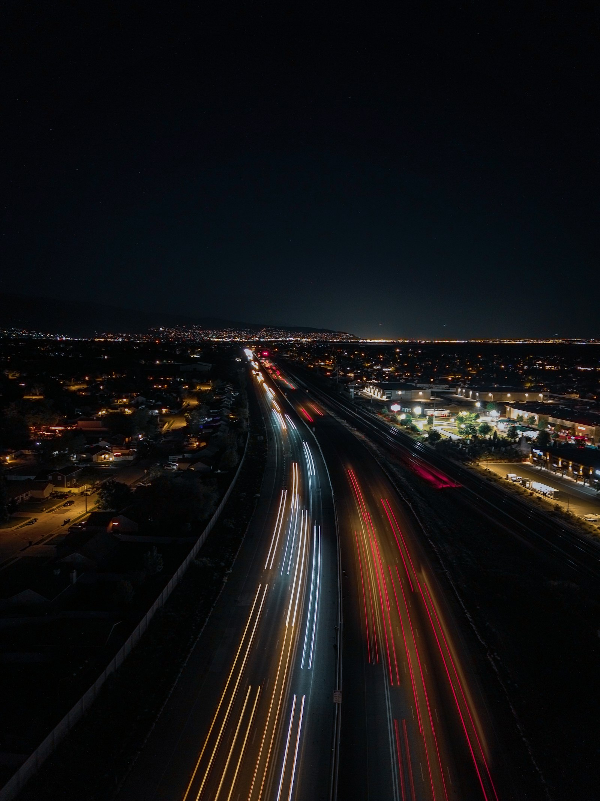
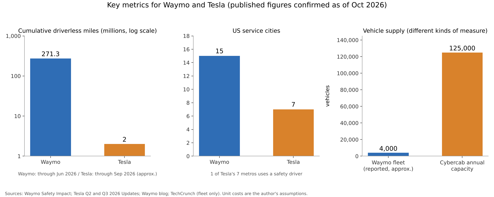
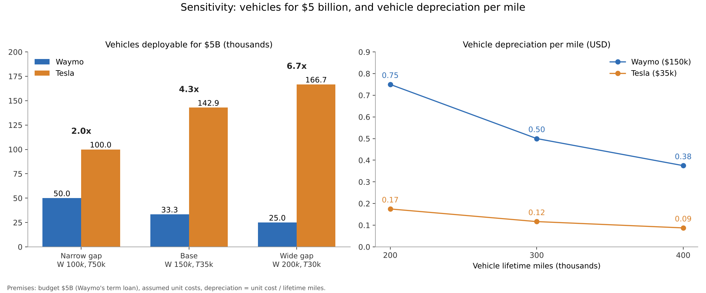

Waymo and Tesla: will safety records or production volume decide autonomous-driving dominance?
Waymo and Tesla: will dominance in autonomous driving be decided by "miles driven without a driver" or by "how many vehicles can be built"? This article examines that question only as far as published figures allow.
Both companies are pursuing the same goal, the robotaxi, yet they differ sharply in sensor choice, reliance on maps, and how they source vehicles.
Using figures from primary sources, a simple estimate with explicit premises, and a sensitivity analysis, it sets out which path is favored under which conditions.

Question and background
Levels of driving automation are commonly described using SAE J3016, an international definition [1]. SAE Level 4 is the stage at which, within defined operating conditions, the system performs the entire driving task without any expectation that a person will be asked to intervene. Level 2, by contrast, assists with acceleration, braking and steering, while a person supervises at all times [1]. Tesla's "FSD (Supervised)" is, as its name indicates, a Level 2 driver-assistance system that assumes supervision.
Waymo's approach layers several types of sensors. LiDAR is a sensor that fires laser light at its surroundings and measures distance to objects in three dimensions from the time the reflection takes to return. The sixth-generation Waymo Driver carries 13 cameras, 4 LiDAR units and 6 radars, and Waymo says it has significantly reduced the cost compared with the previous generation [2]. Waymo has also relied on HD maps, that is, high-definition maps that record lane and sign positions to the centimeter, prepared for each operating area.
Tesla's approach uses camera images as the main input and builds driving behavior through end-to-end learning. End-to-end means that, rather than combining perception, decision-making and control through separate hand-written rules, a single neural network is trained to go from input to driving commands. Its strengths are said to be low sensor cost and the ability to use cars mass-produced in its own factories as they are.
On published scale figures, Alphabet said in April 2026 that Waymo had surpassed 500,000 fully autonomous rides a week [3]. Waymo launched service in its fifteenth US city in September 2026 and announced a $5 billion term loan in October [4]. Tesla, in its Q2 2026 materials, showed robotaxi operations in seven US metros, of which the San Francisco Bay Area runs with a safety driver on board [5]. Its Q3 materials reported that Cybercab production had begun, with installed capacity of more than 125,000 units a year at its Texas factory [6].
Data and method
The figures used and how they were handled are as follows. For Waymo's driverless mileage, I used the cumulative 271.3 million "rider-only" (no driver) miles through the end of June 2026 published on its safety data page [7]. For Tesla's driverless mileage, I used the Q3 statement that cumulative unsupervised robotaxi miles reached "nearly two million" [6]. The mileage ratio is 271.3 / 2.0, roughly 136 times.
For safety, I referred to Waymo's published data and a peer-reviewed paper. Waymo's page states that, compared with human driving, crashes with serious injury or worse are 95% fewer, and crashes with airbag deployment and injury-causing crashes are each 82% fewer [7]. A paper accepted by an academic journal in 2025 reported, at 56.7 million miles, 96% fewer injury crashes between vehicles at intersections [8]. For Tesla, I could not confirm any published figure comparing robotaxi crash rates with human drivers.
The estimate asks how many vehicles each company could deploy with a budget of $5 billion, the same as Waymo's loan. Neither company discloses its vehicle unit cost, so these are the author's assumptions. In the base case, a Waymo vehicle including sensors is set at $150,000 and a Cybercab at $35,000. The formulas are:
Vehicles deployed = budget / unit cost
Vehicle depreciation per mile = unit cost / lifetime miles
Annual rides = vehicles deployed x weekly rides per vehicle x 52
Weekly rides per vehicle were set at about 125, dividing 500,000 rides a week [3] by a reported fleet of about 4,000 vehicles [13]. Because the fleet size cannot be confirmed in a primary source, this value is for reference only.
Results
In the base case, $5 billion buys Waymo about 33,333 vehicles and Tesla about 142,857 vehicles, a gap of about 4.3 times. Assuming 300,000 lifetime miles, vehicle depreciation per mile is $0.50 for Waymo and about $0.12 for Tesla. Assuming 125 rides a week per vehicle, annual rides come to about 216.67 million for Waymo and about 928.57 million for Tesla.

| Metric | Waymo | Tesla | Source |
|---|---|---|---|
| Cumulative driverless miles | 271.3 million (end of Jun 2026) | About 2 million (end of Sep 2026) | [7][6] |
| US service cities | 15 cities | 7 metros (1 with a safety driver) | [4][5] |
| Weekly rides | More than 500,000 (Apr 2026) | Not disclosed | [3] |
| Vehicle supply | Fleet of about 4,000 (reported) | Cybercab capacity of more than 125,000 a year | [13][6] |
| Vehicles for $5B (base case) | About 33,333 | About 142,857 | Author's estimate |
What this shows is that the two measures point in opposite directions. On depth of track record, Waymo leads by more than two orders of magnitude; on mass production and unit cost, Tesla's structure works in its favor.
Sensitivity analysis
I moved the premises in three directions to see how much the conclusion shifts.
First, the gap in unit cost. In the narrow-gap case (Waymo $100,000, Tesla $50,000) the vehicle gap is 2.0 times; in the base case it is 4.3 times; in the wide-gap case (Waymo $200,000, Tesla $30,000) it is 6.7 times.
Second, lifetime miles. At 200,000 miles, depreciation is $0.75 for Waymo and $0.175 for Tesla; at 400,000 miles, $0.375 for Waymo and $0.0875 for Tesla. At every mileage the unit-cost ratio carries through unchanged.
Third, utilization. Setting weekly rides per vehicle at 75, 125 and 175, annual rides from $5 billion of vehicles are 130 million, 216.67 million and 303.33 million for Waymo, and 557.14 million, 928.57 million and 1.3 billion for Tesla.
| Premise varied | Low case | Base case | High case |
|---|---|---|---|
| Unit-cost pair (W/T) | $100k/$50k: 2.0x | $150k/$35k: 4.3x | $200k/$30k: 6.7x |
| Lifetime miles | 200k miles: W $0.75 / T $0.175 | 300k miles: W $0.50 / T $0.117 | 400k miles: W $0.375 / T $0.0875 |
| Weekly utilization (annual rides) | 75: W 130M / T 557M | 125: W 217M / T 929M | 175: W 303M / T 1.30B |

In every combination, Tesla could deploy at least twice as many vehicles for the same budget. This holds, however, only if Tesla's vehicles can achieve the same utilization without human supervision.
Discussion
The opposing view is also strong. A safety record cannot be replaced by vehicle count. Waymo has more than 200 million driverless miles and a peer-reviewed comparative study [7][8]. Tesla's driverless mileage is about 2 million, still too short for a statistical comparison with human drivers. Even with many vehicles, operations will not follow without the trust of regulators and riders. Moreover, Waymo is lowering unit costs with new vehicles [2], and the cost gap may narrow over time.
The data also have limits. NHTSA's crash reporting rule (the Standing General Order) requires reporting of certain crashes that occur while an automated driving system or Level 2 system is in use, but it states that the counts are not normalized by miles traveled and that caution is needed when comparing companies [9]. In the California Public Utilities Commission (CPUC) quarterly reports, Waymo is the only company listed in 2026 as holding a permit for driverless commercial deployment [10]. The state also has a reporting system for disengagements, that is, events in which autonomous mode is released and a person takes over driving [11], but those figures cover test vehicles and do not directly indicate business success. Tesla itself explains that the human average used in its own safety report involves estimates [12].
The uncertainty of the estimate is large. Vehicle unit cost, lifetime miles, labor for remote monitoring, insurance, and charging and cleaning costs are all undisclosed. The fleet size is also a reported figure.
The evidence that could change the conclusion is clear. If Tesla accumulates tens of millions of driverless miles across several cities without safety drivers or supervision, and publishes mileage-adjusted crash rates, its production advantage would move it closer to dominance. Conversely, if Waymo brings unit costs down to a level it can disclose and steadily demonstrates around one million rides a week, its lead in track record might close the gap in scale.
Conclusion
On current published figures, Waymo leads in driverless track record, number of cities, and permits. Meanwhile, in vehicles deployable for the same budget, Tesla came out ahead by 2 to 6.7 times even as the premises were varied. What decides dominance appears to be a race between two speeds: whether Tesla can turn its production advantage into a driverless safety record, and whether Waymo can bring down unit costs while maintaining its record.
How I see it
I think Tesla will take dominance. The reason is that it can build vehicles in large numbers itself. Electric vehicles are almost here. What remains is the fight over deregulation and against vested interests, which I think is the biggest and hardest part.
I have not yet ridden in a robotaxi or used FSD. I want to try them soon.
I hold shares in both companies: 350 shares of Alphabet and 400 shares of Tesla. Even so, I hope Tesla wins.
Sources
- SAE International (via ANSI Blog), "SAE Levels of Driving Automation: J3016-2021," 2021. https://blog.ansi.org/sae-levels-driving-automation-j-3016-2021/
- Waymo, "Meet the 6th-generation Waymo Driver," August 19, 2024. https://waymo.com/blog/2024/08/meet-the-6th-generation-waymo-driver/
- Alphabet, "Alphabet Announces First Quarter 2026 Results," April 29, 2026. https://s206.q4cdn.com/479360582/files/doc_financials/2026/q1/2026q1-alphabet-earnings-release.pdf
- Waymo, "Waymo closes $5 billion debt financing," October 8, 2026. https://waymo.com/blog/2026/10/waymo-closes-5-billion-debt-financing/
- Tesla, Inc., "Q2 2026 Update" (Form 8-K Exhibit 99.1), July 22, 2026. https://www.sec.gov/Archives/edgar/data/0001318605/000162828026049213/exhibit991.htm
- Tesla, Inc., "Q3 2026 Update" (Form 8-K Exhibit 99.1), October 21, 2026. https://www.sec.gov/Archives/edgar/data/1318605/000162828026066738/exhibit9914.htm
- Waymo, "Waymo Safety Impact" (data through June 2026, accessed October 28, 2026). https://waymo.com/safety/impact/
- Kusano, K. D., Scanlon, J. M., Chen, Y.-H., McMurry, T. L., Gode, T., Victor, T., "Comparison of Waymo Rider-Only Crash Rates by Crash Type to Human Benchmarks at 56.7 Million Miles," Traffic Injury Prevention (accepted 2025), arXiv:2505.01515, May 2, 2025. https://arxiv.org/abs/2505.01515
- National Highway Traffic Safety Administration (NHTSA), "Standing General Order on Crash Reporting" (data through September 15, 2026, accessed October 28, 2026). https://www.nhtsa.gov/laws-regulations/standing-general-order-crash-reporting
- California Public Utilities Commission (CPUC), "AV Program Quarterly Reporting," updated August 18, 2026. https://www.cpuc.ca.gov/regulatory-services/licensing/transportation-licensing-and-analysis-branch/autonomous-vehicle-programs/quarterly-reporting
- California Department of Motor Vehicles (DMV), "Disengagement Reports," accessed October 28, 2026. https://www.dmv.ca.gov/portal/vehicle-industry-services/autonomous-vehicles/disengagement-reports/
- Tesla, Inc., "Vehicle Safety Report," accessed October 28, 2026. https://www.tesla.com/VehicleSafetyReport
- TechCrunch, "Waymo is scaling fast. Here's what the fleet data shows," September 24, 2026 (news, supplementary). https://techcrunch.com/2026/09/24/waymo-is-scaling-fast-heres-what-the-fleet-data-shows/
Photos: Heber Davis, Jan Valečka (Unsplash). Charts by YUKI CAPITAL
I record my daily numbers and decisions on X.